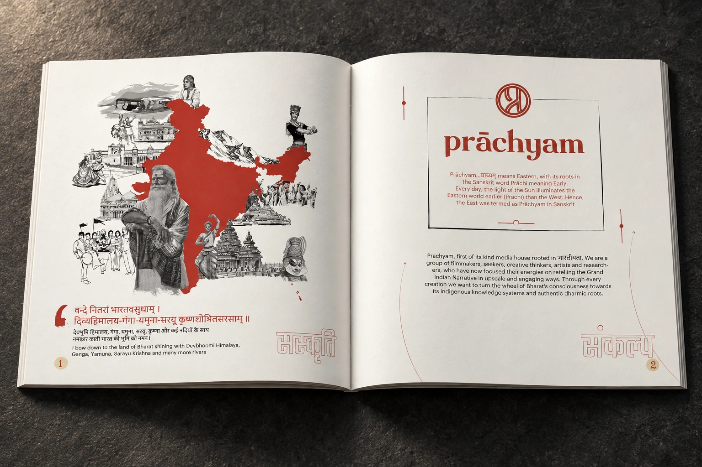
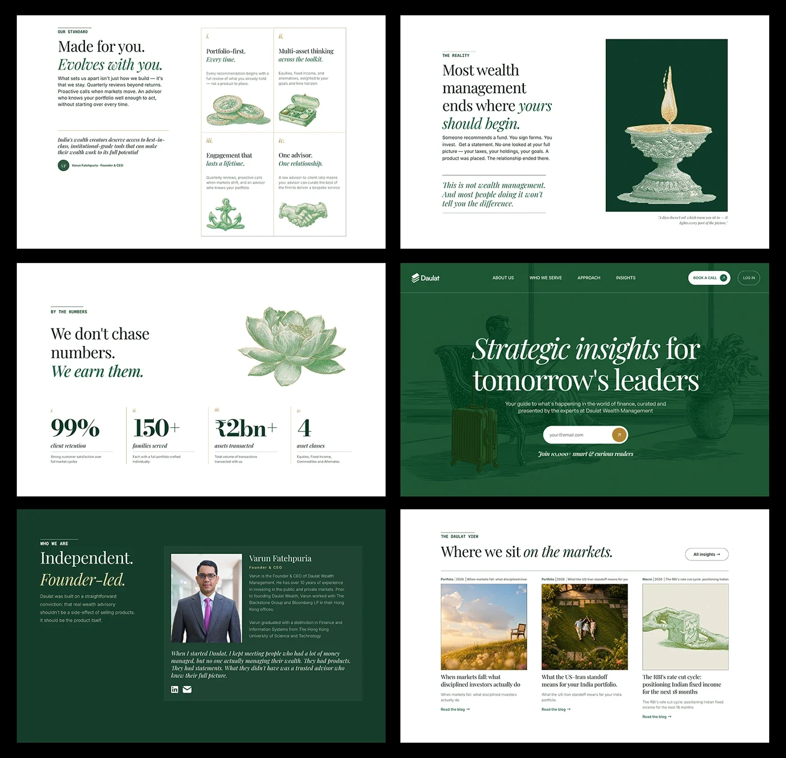
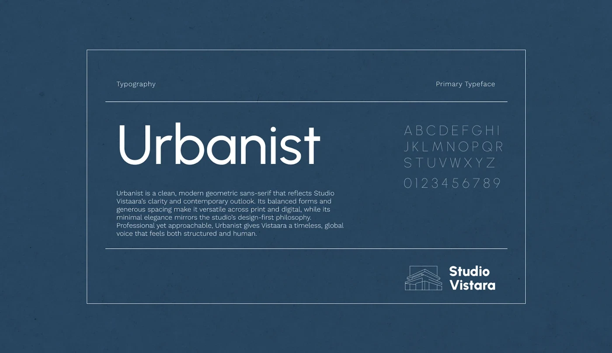
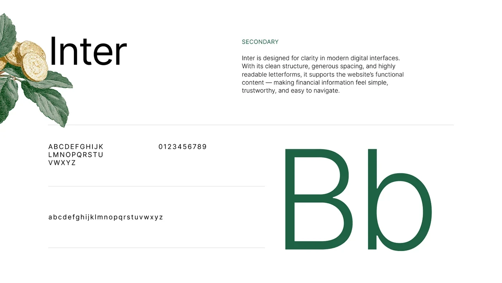
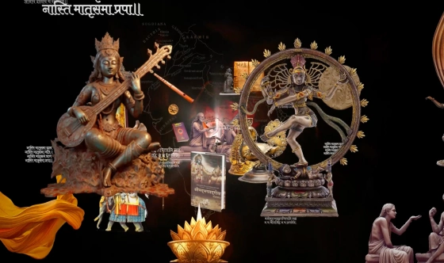
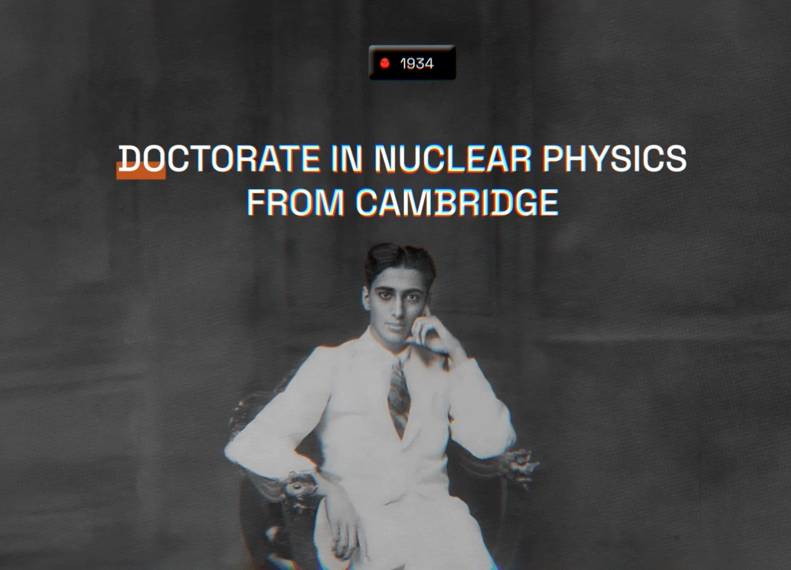
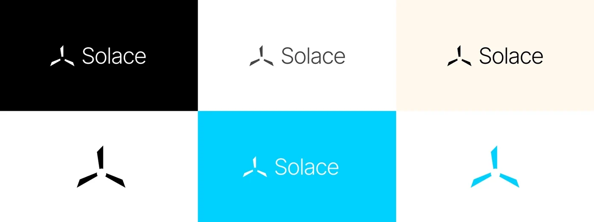
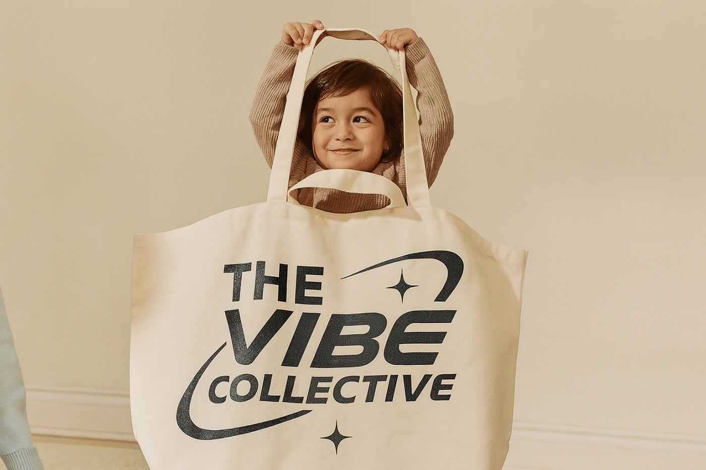

I took the long way into design.
And I’m glad I did.

I was supposed to build things.Just not these things.
I studied civil engineering before finding my way into graphic design. What started as curiosity slowly became the thing I wanted to spend all my time doing.
FIELD NOTE / 2014—2018
B.E. CIVIL ENGINEERING → GRAPHIC DESIGN
The detours turned out to be useful.

Desire02.01

Story02.02

Consistency02.03

Systems02.04

Clarity02.05

Speed02.06
My varied career didn’t scatter my thinking. Each medium taught me something different.
I like making complicated things feel simple — without making them boring.
Sometimes that means a brand system.
Sometimes a landing page.
Sometimes fifty pages of information.
Sometimes one image.



THE JOB DOESN’T.
Understand what we’re actually trying to say.
Collect far too many references.
Find one idea worth pursuing.
Make something quickly.
Look at it tomorrow and hate parts of it.
Fix those parts.
Not a process diagram. More like a recurring pattern.
Things that end up in the work, eventually.
Film. Advertising. Old magazines. Interfaces. Football. Architecture. Internet nonsense.







An idea is more useful than a style.
Clarity and personality aren’t opposites.
Taste is mostly knowing what to remove.
AI can make the process faster. It can’t decide what’s worth making.
The details people don’t notice are often the ones they feel.
Currently.
I’m currently a Graphic Design Lead at WizCommerce, designing for B2B wholesale commerce — an industry that is far more visually interesting than that sentence makes it sound.
I work across web, campaigns, product storytelling, reports, motion and whatever else needs making.
Outside work, I’m usually experimenting with AI, building something unnecessary on the web, watching a film, or saving references I’ll forget about for six months.